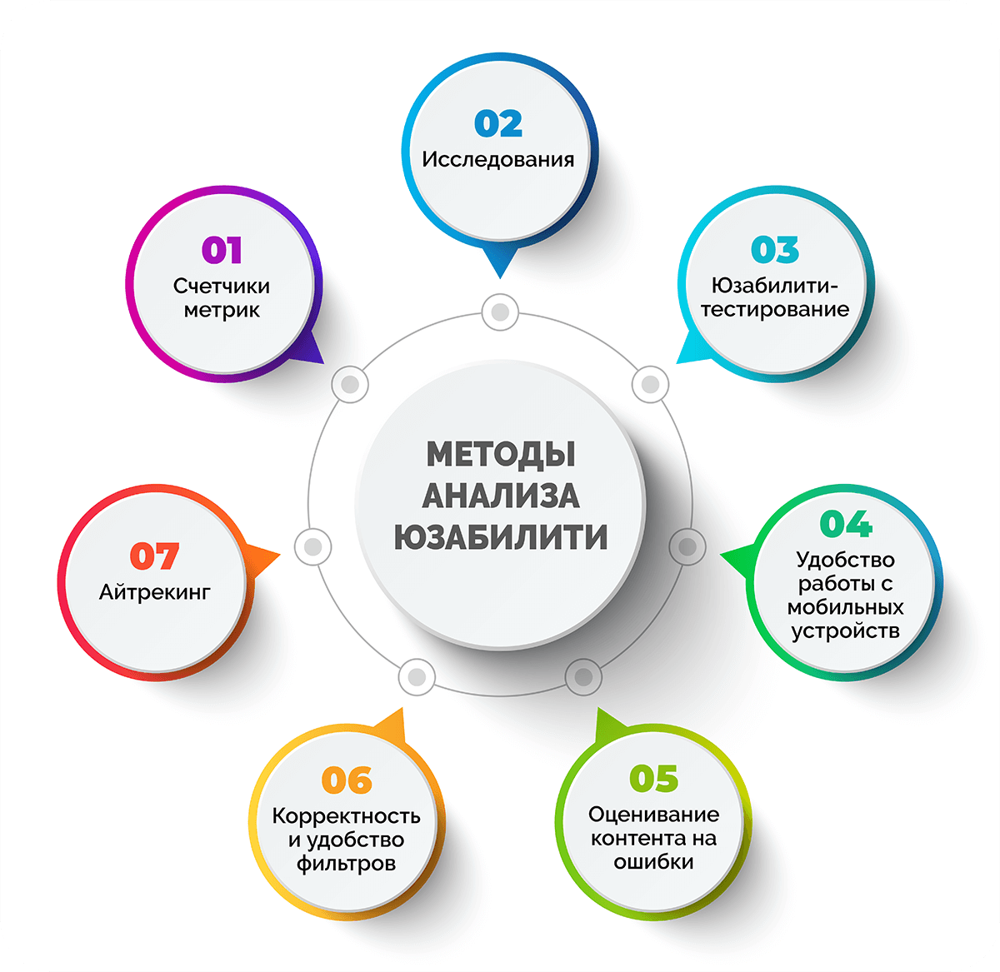

Не заставляйте меня думать.
Первый вопрос, который возникает при разработке сайта: “Что мне следует сделать в самую первую очередь, если я хочу, чтобы моим сайтом или приложением было легко пользоваться?” Ответ прост: “Не заставляйте меня думать.” Этот принцип перекрывает всё и разрешает любые противоречия.

Изучайте основы юзабилити и улучшайте удобство ваших веб-проектов.